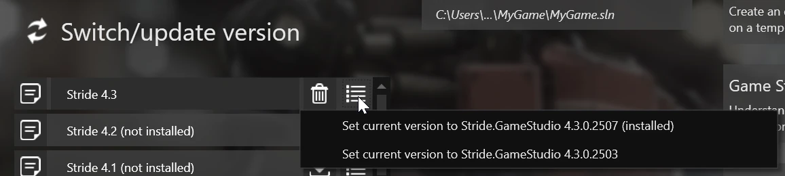
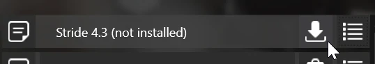
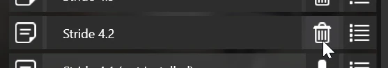

Manage versions
Beginner
Different versions of the engine can be managed using the Stride Launcher.
Note
The instructions provided here can be used as a general guide for updating to any new version of Stride.
Versioning scheme
Versions follow the formula major.minor.patch.
Changing the version
You can select a different version of the engine by clicking on one under Stride versions.
To change the patch number of a version (the last part in a version string), click the dropdown menu next to it.

.Installing a version
To install a specific version of the engine:
- Select the version you want to install (see changing the version).
- Press the install button.

Uninstalling a version
To remove a specific installed version of the engine:
- Select the version you want to get rid of (see changing the version).
- Click the uninstall button.
